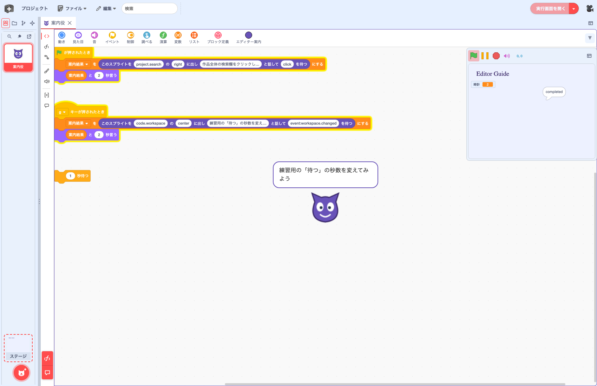

Feature guide 14/14 · Updated November 27, 2026
Guide editor actions with a sprite
Bring a mascot outside the Stage, point to named editor controls, and wait for real actions in an interactive lesson.
14.1 Open a guided project
The built-in Editor Guide extension lets a project point to controls in the editor. A guide appears when the project calls it, rather than automatically starting a tour when the editor opens.
- Download the minimal sample SB3 and open it through File → Open SB3 File… in Plus Editor.
- If the Stage is hidden, use the stage-opening menu to show it in the drawer. Press the green flag. The mascot appears outside the Stage beside Search project. Click the search field to complete the guide.
- Click the Stage background to leave text input, keep the code area open, and press G to try a guide that waits for a code change. Change the sample's “wait 1 seconds” value to finish it.
The sample receives the guide result and has an independent clock. Edit its Editor Guide blocks as a starting point for your own lesson. The project data and original mascot SVG are also available (sample notice). Sample messages are in Japanese. Use a Plus Editor build supporting this built-in extension.


14.2 Choose a named place instead of coordinates
Targets use logical names rather than pixel coordinates or CSS selectors. A project chooses from places registered by the Editor Guide host; it cannot declare an arbitrary new editor target itself.
| Name | Place and conditions |
|---|---|
project.search | The project search field. It remains visible across tabs, making it useful for lessons combining search, saving and Git. |
code.workspace | The current code area, which must be visible. Supports event:workspace.changed. |
editor.greenFlag | The green flag must be visible, such as in the stage view. Pressing it restarts the project, so avoid it as a confirmation button in an ongoing lesson. |
sprite.list | The registered sprite list. Some layouts cannot resolve it; check availability before use. |
Hidden, missing or ambiguous targets cannot be guided. Branch using “can guide [target]” and provide stage instructions or a skip route when unavailable. Only targets in the same document are supported, including when panels can otherwise move to separate OS windows.
14.3 Show a guide and wait for an action
- guide [target] saying [message] displays a pointer and explanation.
- guide [target] saying [message] and wait for [action] waits for the real action and returns its result.
- guide with this sprite [side] of [target] saying [message] and wait for [action] places the calling sprite left, right, above, below or in the center of the target. It is unavailable on the Stage.
- hide editor guide, guide result, guide result reason close the guide and inspect its outcome.
Actions include click for a real click on the target and supported events such as event:workspace.changed. Reading or closing the explanation is not treated as completing the requested action.
For example, set a result variable to a sprite-guide reporter targeting code.workspace, side right, message “Try changing the wait duration”, action event:workspace.changed. Continue only when the result is completed; otherwise offer retry or skip. This event detects a code change, not a particular correct answer. Check the intended value separately if the lesson needs that guarantee.
The displayed sprite follows its current costume, size, direction and effects. Its speech comes from the Guide message; ordinary “say” bubbles and text-to-speech are not automatically relocated. The Stage drawable is temporarily hidden and restored according to its current visibility when the guide ends. A dedicated mascot makes lesson behavior easier to manage.

14.4 Separate completion, cancellation and unavailability
| Result | Lesson response |
|---|---|
completed | The awaited action arrived. Continue to the next explanation or task. |
cancelled | The guide was closed or superseded. Offer retry or skip rather than treating it as completion. |
unavailable | The target or sprite cannot be used. Explain the layout or provide instructions on the Stage. |
timeout | A host call with an explicit deadline timed out. Ordinary Scratch guide waits have no implicit timeout. |
One VM has one active guide at a time. Two mascots should take turns. A paper-story scene calls the guide, receives the result and then continues. Manage waits when changing scenes, closing the previous guide before starting another.
Stopping or replacing the project, stopping the calling thread, or losing the target releases the display and wait. Lessons needing resume behavior must track their own chapter or scene; saving the guide display alone does not provide resumable execution.
14.5 Combine guides with editing, debugging, saving and Git
Only the calling thread waits; unrelated scripts keep running. The sprite projection passes pointer input through, so you can operate the editor underneath and edit other sprites or scenes. Editing running code or shared variables has the usual Scratch effects.
Guides do not prevent whole-project SB3 saves, project-folder saves, Git diff inspection or local commits of saved changes. Saves contain project data, not the running thread position or temporary guide display. Normal Git permission checks, conflict checks and restrictions during execution still apply.
Debugger logs and variable inspection remain usable. VM-wide pause and stepping affect the mascot too. If an action completes while paused, the lesson's continuation runs after the VM resumes. Explain the task before pausing.
Switching tabs can hide a guide target such as the code area and end the wait as unavailable. Prefer persistent targets such as search, or offer retry after returning. Branch switching, reloading after pull and loading another project replace execution state; they do not guarantee continuation of the same running lesson.